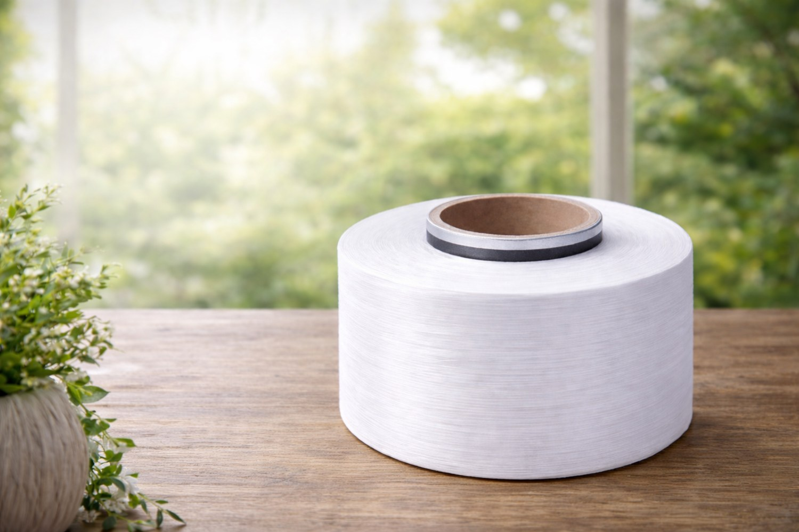
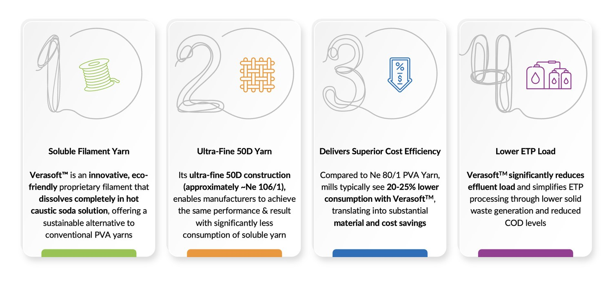

Wonder Filament that Dissolves in Caustic Soda Solution

Verasoft is an ultra-fine, eco-friendly soluble filament yarn engineered to dissolve efficiently in caustic soda, enabling innovative and smart functionality.
With its fine denier structure, Verasoft allows manufacturers to achieve desired performance using lower yarn consumption compared to traditional soluble yarns.
Engineered through proprietary technology, Verasoft enables:

